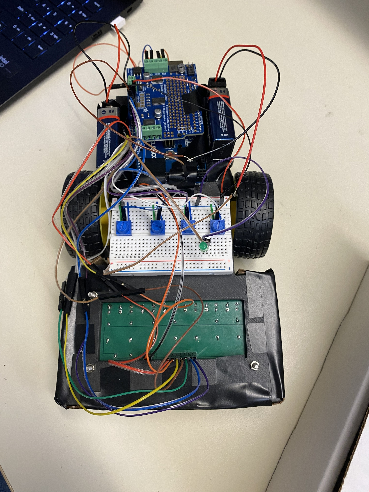
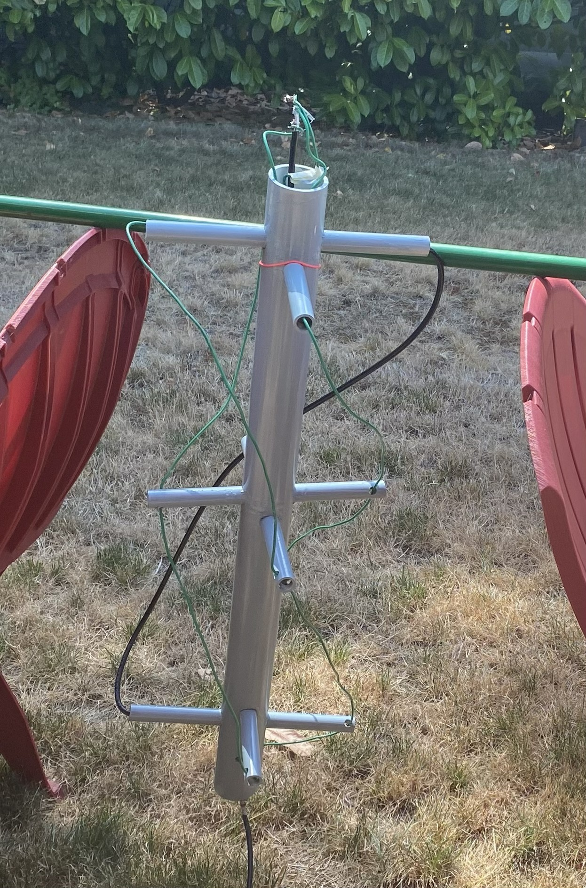

Electrical and Computer Engineer Student
Hi, I'm Brandon Leavitt
I am a current undergraduate student at the University of Washington who is majoring in electrical and computer engineering. I am passionate about embedded systems,
circuit design, signal processing, coding, and power. In my freetime I like to
play soccer, 3D print, and play pickleball.
Skills
Languages
Java Python Verilog
HardwareArduino FPGA (basic) Digital Logic Design
Design ToolsFusion 360 KiCad LTspice Quartus
Coursework
UW, EE 280 · In Progress
Introduces the modeling and physics principles behind electrical and optical/photonic devices, including how semiconductor devices work and are used in circuits.
UW, EE 233 · In Progress
Deeper circuit theory covering sinusoidal signals, phasors, and frequency response, with computer-based circuit analysis.
UW, EE 242 · In Progress
Introduction to signal processing, including both continuous- and discrete-time signals and systems. Mathematical foundations of signals and systems analysis.
UW, EE 271
Combinational and sequential logic design, state machines, and hardware description languages.
UW, EE 241
Introduction to programming for signal and information processing. Basic syntax and data types.
UW, EE 215
Basic circuit and systems concepts, Ohm's and Kirchhoff's laws, and Circuit analysis.
UW, EE 201
Lab covering soldering, instrumentation, and basic hardware fundamentals.
Projects

Line Following Robot
Stack: Arduino, LTspice,
Built a line-following robot for my EE 201 class project, using sensors to detect a track by looking at the lines color compared to surrounding to keep it centered on the track. Debugged calibration between the two motors to get consistent turning. Started by prototyping the sensor and motor circuit on a breadboard, then we designed and printed our own PCB and 3D printed the robots chassis.

Quadrifilar Helix Antenna
Stack: GQRX, WXtoImg, RF and Antenna Design
Designed and built a quadrifilar helix (QFH) antenna to receive VHF signals. Picked up and decoded local radio stations to confirm the antenna worked, then used it to receive NOAA weather satellite transmissions. Used gpredict to time satellite passes that were in range, GQRX to tune and record the signal, and WXtoImg to decode the GQRX recording into live weather satellite imagery to see.

Personal Portfolio Website
Stack: HTML, CSS, GitHub Pages
Built the website using HTML and CSS. Learned how Flexbox lays out elements side by side and used CSS variables to control the whole color scheme. Added reusable blocks so I can add new projects and courses over time by copying a blank section. Hosted and deployed with GitHub Pages.